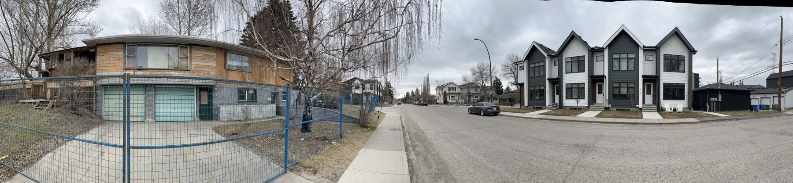

Camille's Lot
Housing, transit, and the data nobody was going to hand me
Papers · GitHub · LinkedIn · Resume · Email
I'm Camille Moreau, in Calgary. I finished a political science degree and did what you do with one: I asked around. A family friend pointed me at the data science certificates at the University of Calgary, and someone who had been through one gave me the honest version. Most of the coursework runs on playground data. If you want the skills to mean anything, you take real data from real places and make it work. I wanted that to be me.
So my first project was the thing happening on my own street. In August 2024 Calgary rezoned every residential lot in the city at once.“Blanket rezoning”: duplexes and rowhouses became permitted on lots that had been single-family only, citywide, in one council vote. Council repealed it two years later, effective 4 August 2026. I had argued for exactly that in a community report the year before,A Manufactured Crisis (2023), on financialization and housing. Aggressive rezoning was one of five recommendations. so I wanted to see whether it worked. The data work was messy, and I made mistakes and left them in the paper on purpose. But when it was done it was mine, and everything else on this site grew out of it.
This is a portfolio, but it is also the playground I was promised: real data, real places, and what actually happens when a policy meets a market.

The work
The Rezoning Paradox paper · Nov 2025
 Actual starts against the counterfactual. The dashed line is what the pre-policy trend predicted. The gap is the paper.
Why does every single person around me say housing sucks? Calgary removed the rules, so more housing should have followed. I ran an interrupted time series on seventeen months of CMHC housing starts to check. Starts came in 16% below the growth trend that was already there before the bylaw. Construction did shift toward multi-family, as intended, but not by enough to cover the gap. The second half of the paper is about why a city council works like a tree and a construction market works like a root system, and what happens when one gives the other an order.
Actual starts against the counterfactual. The dashed line is what the pre-policy trend predicted. The gap is the paper.
Why does every single person around me say housing sucks? Calgary removed the rules, so more housing should have followed. I ran an interrupted time series on seventeen months of CMHC housing starts to check. Starts came in 16% below the growth trend that was already there before the bylaw. Construction did shift toward multi-family, as intended, but not by enough to cover the gap. The second half of the paper is about why a city council works like a tree and a construction market works like a root system, and what happens when one gives the other an order.
There is a section called What went wrong (and how I fixed it). Edmonton rezoned the same month, which killed my control group. Housing price data costs $500 a month and a real estate licence. It's all in there.
Read the paper (v1.0) → All versions The CMHC data
Lapse Watch Palantir Foundry · Aug 2026
The sequel. When the rezoning was repealed, approvals granted under the old bylaw kept their density only until a commencement deadline passed; after that the lot reverts and the density cannot be re-earned. That is a countdown on about 1,365 parcels.1,371 parcels is the hard number; 1,365 is the actionable queue after lapsed rows are excluded. Over twenty-one runs across twelve days the saveable pool fell from 1,364 to 1,331, and more than half of that movement was good news: approvals leaving because a building permit was filed. I had been wanting to get more technical, and I was going after a deployment strategist role at a Palantir partner here in Canada, so I taught myself Foundry and built the whole thing solo: incremental ingestion from four City of Calgary tables with watermarking and rollback, a four-object ontology, a ranked operator queue with governed writeback, and one AIP function that is built to decline rather than guess.
I didn't get the role. The project turned out alright. The write-up is honest about what it doesn't have: no user but me, no City engagement, no approval saved. It also covers the four bugs that were all the same bug, which is that every component reported success while being wrong.
What I built, and what broke →
The Quiet Politics of City-Building essay · draft v0.9
Calgary's Green Line LRT had $1.5 billion in federal funding withdrawn and then re-committed inside a single electoral cycle. I went looking for the political signal. I matched 225 federal ridings to Statistics Canada journey-to-work data across four elections; nationally, the relationship between transit dependence and vote swing is r = −0.11, p = 0.33. Nothing. Calgary's 2018 BRT and Montreal's REM as natural experiments: also nothing. Then the Green Line ridings themselves, one month after the money came back, swung Conservative by more than the rest of the city.Shepard, home of the station the $1.5B was for: +7.6 points, more than double the non-Green-Line ridings. Taking the train away punished no one, and giving it back rewarded no one. The essay offers three readings and doesn't pick. Tocqueville, Olson, Schumpeter, and Gramsci each get a turn, and there is a section about the afternoon I decided area-weighted spatial joins were good enough.
Read the draft → The commute that started it
Alignment Is Politics essay · draft v0.2 · Sep 2026
I asked Claude to convince me that p(doom) was 100%, and then argued back. The essay starts with the case nobody makes: we have built things that could end us before and we are mostly fine. We invented the most dangerous institution in history and spent four hundred years making it contestable, murder rates fell thirty-fold, no great powers have fought since 1945, and the bomb — which the doomers claim as proof that coordination is impossible — went from seventy thousand warheads to under thirteen thousand by treaty, between enemies, with nine nuclear states instead of Kennedy's predicted twenty. None of that came from solving values. Madison was doing alignment research, and the American innovation was Article V.You cannot design a perfect constitution. The invention was the amendment process, used twenty-seven times. The alignment field is trying to write one that never needs amending, for an agent smarter than the authors.
Then the floor drops out. I had sampled revolutions, where the capability gap was always small; the honest test of my own variable is conquest, and there is no Thermidor in Carthage. Copies of a model are not a separation of powers. And every regulator in my ledger was more capable than the thing it regulated, which stopped being true some years ago. So the reframe doesn't lower p(doom), it relocates it: the likeliest way this ends badly is not an alien optimizer, it's an obedient system owned by people nobody can contest. Ranges, not a number, and the one I'd defend is 15–25%.
Read the draft → Skip to the number
Work from inside a nonprofit 2025
I spent 2025 as Operations Administrator at Closer to Home Community Services, a behavioural health nonprofit with about 250 staff. Three things came out of it.
When did retention change? I borrowed Sequential Turning Point Detection from InSAR, where geologists use it to find when the ground started moving,Ghaderpour et al. (2024). Voluntary and involuntary turnover served as treatment and control, which rules out the confounders that hit both. and applied it to seventy months of HR data. Three statistically significant turning points fell out. The Wellness Days policy of June 2023 lined up with the largest positive shift in voluntary retention in the whole window, three times anything before it. White paper to senior leadership; the paper and the Python are available on request.
NGO Turnover Analysis Tool. For HR managers who have never written code: upload the Excel export, get the analysis. “35% turnover” is a number. “48% of counsellor turnover happens in months three to twelve” is an argument. The tool sorts every termination into six tenure windows, draws department → role → outcome as a Sankey, and costs it out at roughly 0.8× salary. Python and Streamlit. Launch it · Source
FleetTracker. How most small nonprofits track ten to thirty vehicles: email chains, printed PDFs, a spreadsheet nobody trusts. I built a zero-cost incident pipeline on Google Apps Script, form intake to automated routing to stakeholder reports, with LLM-assisted summaries of the insurance paperwork. In production since 2025, MIT-licensed, free for nonprofit use. Technical walkthrough · Source
Bulletin 01: The Ingest Gap OSINT · 2026
I read Russian. For this one I read Russian-language drone-training channels in the original, on flying FPV in the cold: waterproofing rituals, batteries warmed against the body, de-icing with alcohol. Then I set that against Canada's published position, where observed icing is a no-fly condition. One side treats winter as a maintenance step; the other treats it as a hazard. Written for Canadian defence policy readers, from primary sources, for Arctic force modernization.
In the works
The coda of the Green Line essay. The piece is drafted; the ending is what I'm on now.
ZERG-RUSH, a multi-agent pipeline for tracking how a narrative moves across media ecosystems: ingestion, classification, reporting. Python and LLM APIs. Write-up to follow; ask me about it in the meantime.
About
B.A. in Political Science, psychology minor, Athabasca University, 2026, finished while working full time. At Closer to Home I built the dashboards, cut manual processing by about 40%, and led the Imagine Canada accreditation.103 standards, in a year. Before that, content evaluation at Outlier. Before that, a lot of debate and a lot of 5-man flex queue, and semi-reading my way through political theory, Tocqueville to Brown.
Tools, roughly in order of how often I reach for them: Python (pandas, numpy), SQL, Excel, D3.js, Power BI, Google Apps Script, and now Palantir Foundry. English and Russian, both fluent. French, casually. This site is hand-written HTML with no build step.Claude helps with debugging, syntax, and spelling, and lives on my phone where Instagram used to be. The questions and the connections are mine.
I'm open to research, analysis, and writing roles, and increasingly to the technical ones.
Say hi
Email me about the work, about something you're reading, about a project you're stuck on, or about whether any of this resonates. I read everything, and I write back when I can.
camillemoreau2002@gmail.com Resume (PDF) GitHub LinkedIn
— Camille